Wrangling Regular Expressions
This is a backup lesson in case the internet is not available. It’s designed to present from the downloaded repo using Visual Studio code. It is not as cool as https://regex101.com, but it will do.
A regular expression (regex or regexp for short) is a special text string for describing a search pattern. Searching text with a pattern instead for a specific string of characters can be VERY useful for cleaning data. The concept is available in many programming languages and tools.
Key concept: patterns
Let’s say you have a list of phone numbers in 10-digit format – 512-555-1212 – but you want the area code to be in parentheses: (512) 555-1212. You could do a simple search of the “512” area code followed by a dash “512-” and replace it with an area code in parentheses and a space: “(512)”.
But what if there are different area codes in the list?
512-555-1211
301-333-1212
410-123-1213With regular expressions, you can search for a pattern of characters. Instead of searching just for 512-, you can look for “three numbers together at the beginning of a line that are then followed by a dash”.
If you capture that matching pattern as a group, you can then replace that group with parentheses outside it, no matter what the contents of the group. If that saved group is called $1 then you can replace it with ($1) and it doesn’t matter if $1 is equal to “512-” or “301-”.
Special characters, commands and escape
Let’s touch quickly on the syntax of regular expressions. Don’t get hung up if these sound like gibberish, because it will make sense more when we start using it. This Cheatsheet comes in handy here.
Regular expressions use special characters to do special things, like match the beginning of a line. These commands are called tokens. Some examples:
^ will find the beginning of a line
+ will find “one or more” of whatever precedes it.
Regular expressions use the backslash (the one above return on a keyboard where the top tips to the left) with other characters to create more tokens to do special things:
\d will find any number character (or digit).
\D will match anything other than a number.
\t is a tab character, because hitting the tab on the keyboard will perform the action instead of giving you the character.
But then sometimes, you actually need to find the character ^, and not use it as a command. Regular expressions use the to give the literal expression of a character that would otherwise be a token:
\* will find the asterisk character instead of the token to find “zero or more”.
Defining our goal
We’re going to use regular expressions to split complicated address data into individual parts. The sample we’ll use is a column from some City of Austin data published on their Socrata open data portal.
It had all the address parts crammed into a single field. Regex can easily explode that into individual columns, which is more useful to us.
So, our goal is to turn this …
"10111 N LAMAR BLVD
AUSTIN, TX 78753
(30.370945933000485, -97.6925542359997)"
"2620 LAKE AUSTIN BLVD
AUSTIN, TX 78703
(30.28190796500047, -97.77587573499966)"… into this, with each address part separated with a tab:
10111 N LAMAR BLVD AUSTIN TX 78753 30.370945933000485 -97.6925542359997
2620 LAKE AUSTIN BLVD AUSTIN TX 78703 30.28190796500047 -97.77587573499966With this change, we can copy/paste the results into a spreadsheet.
The goal in a nutshell
We are building a pattern in our regular expression field, creating “capture groups” for each part of the address that we want to keep. We’ll continue the pattern outside the group until we get to the next part we want to keep, when we’ll create a new group, and so on.
You’ll want to reference your Regex-Cheatsheet.docx or Regular-expressions-syntax.pdf in the resources folder.
Let’s get started:
- From Visual Studio Code where you are working with this, open the file data/socrata_addresses_copy.txt.
This text is just one column from a larger Socrata data set of restaurant inspection scores in Austin, TX. (When I want to clean a single column of data, I often download the data and will just copy out one column into my text editor and work it before pasting back the results into a new Excel column, carefully making sure they still line up.)
Let’s look at our data a little closer. This example from the top of the file is just one “cell” of data, even though it has multiple lines of text
"10111 N LAMAR BLVD
AUSTIN, TX 78753
(30.370945933000485, -97.6925542359997)"The address, city, state, zip, latitude and longitude are all in the same “cell” (what is inside the quote marks), but the content of the cell has returns in it. We want to split these six distinct pieces into their own columns for each record. Why? Many reasons, but one is to use the latitude and longitude for data visualizations.
We will build a Regular Expression pattern to Find and capture six groups of text and then Replace those groups with tabs between them so we can put them back into a spreadsheet as columns.
Building our Find pattern
In your
data/socrata_addresses_copy.txtfile, do Command-option-f to open the Find and Replace box. (Or menu: Edit > Replace)The Find/Replace window will open at the top right.
Next to Find you’ll find some options. Click on the one that is a period-asterisk: .*
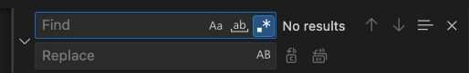
Find and Replace prompt
Capturing the address
We’ll begin entering tokens into the “Find” prompt so we can see how to use tokens to capture patterns. In some cases, we’ll “capture” the pattern using parentheses, so we can refer back to it later.
We know that the first line starts at the beginning of the line, so we can start with this token: ^.
Add the
^to the Find prompt.You’ll see that the first character of each line is now highlighted.
Next we want to add the double-quote so we can continue the pattern from the beginning of each address. Add a double-quote after the first token, like this:
^"You’ll notice that now only the double-quote marks are selected.

First quote selected Next, we’ll start our first capture group with parentheses:
^"()You’ll see as you type in the open parentheses that you’ll get an “error” in the Find box because it expects a closing parentheses. Make sure you add that, then put your cursor back between them.
Now, inside those parentheses, we’ll add
.*so the full line looks like this:^"(.*)You’ll see that the rest of the line has been selected.
Inside the parentheses (our first group), we want to capture the whole address, which is everything until the end of the line. The period token
.means “any character”, and*means “zero or more”, so put these together and we get everything:^"(.*).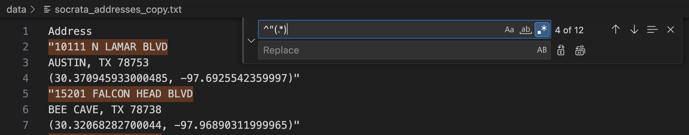
Address line
Add
\nto the end of the string to make:^"(.*)\n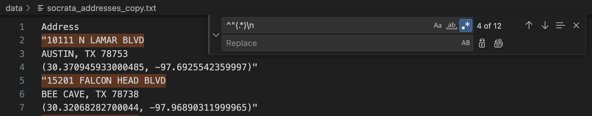
Address line with return
Capturing the city
As we look through the list, you can see we have some cities with more than one word – like “BEE CAVE” – so we need a way to capture both letters and spaces, but not other punctuation. There are MANY ways to do this, but we’ll use a “character set” to show how to use more than one token at a time:
First, create a new group:
^"(.*)\n()Then inside the group, we have to build the “character set” using square brackets. Inside those brackets we’ll ad a
\wtoken to catch any word character, and a space so we can catch those, too. Lastly, we put a+token right after the character set to signify we want “one or more”:^"(.*)\n([\w ]+)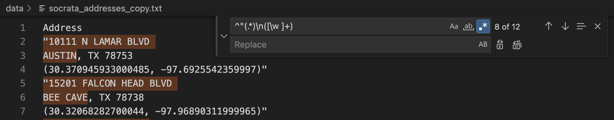
City captured
Capturing the state
These addresses are all in TX, so we don’t really have to save it at all, but we will. We’ll use this to remind ourselves that you can also just match a string literally.
First we put the comma and space outside the second group, since we don’t want to keep it:
^"(.*)\n(\w+),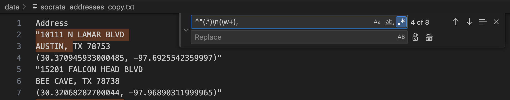
City with comma and space You can’t see that trailing space in the image above, but make sure it is there.
Then we create our third group with TX inside it:
^"(.*)\n([\w ]+), (TX)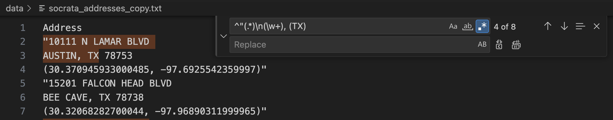
Adding TX
We choose to find the literal text “TX” because there are no other states in this data set. We can’t skip it because we need the pattern to continue.
Capturing the ZIP
Again, we don’t want to keep the space between the state and ZIP, so we’ll put it outside the third group.
Add the comma, space and new group to start our fourth group:
^"(.*)\n([\w ]+), (TX) ()All of these zip codes are of the 5-digit variety, so this can be less complicated than it might be with 9-digit ZIPs. Again, there are many ways to do this, but we’ll use
\dfor the numbers and*to capture zero or more of them. Add those inside the capture group:^"(.*)\n([\w ]+), (TX) (\d*)Complete the pattern for this line with the new line token
\n. (NOTE: Remember to change the\nto\Rif we are on PCs):^"(.*)\n([\w ]+), (TX) (\d*)\n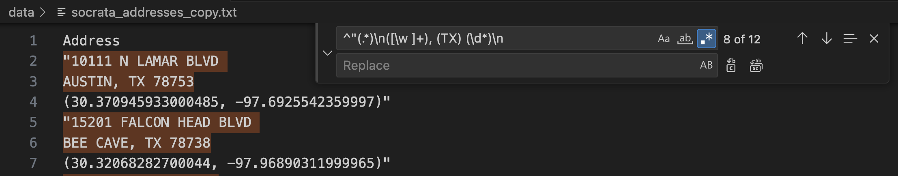
Zip captured to end of line
Capturing latitude
We don’t want to keep the parentheses that starts this last line, so we’ll put it outside any capture group. However, since parentheses mean something special in regex, we need to escape it with a backslash so it will find the character and not start the new group:
^"(.*)\n([\w ]+), (TX) (\d*)\n\(Now we can start our new group, so go ahead and add the beginning and end parentheses:
^"(.*)\n([\w ]+), (TX) (\d*)\n\(()Inside our fifth group, we need numbers and the decimal point. We will create a character set using square brackets and put inside it
\dfor numbers and\.for the decimal point, which we have to escape since.means “any character”. We finish it off by using+to look for one or more of the characters in the set. Like this:^"(.*)\n([\w ]+), (TX) (\d*)\n\(([\d\.]+)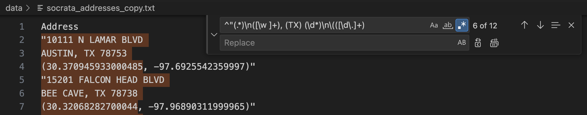
Latitude captured
Capturing longitude
We don’t need the comma and space in our next group, so we put it outside to keep the pattern going:
^"(.*)\n([\w ]+), (TX) (\d*)\n\(([\d\.]+),We can get the longitude like we did latitude, but we have to add the hyphen to the character set. So, create the group:
^"(.*)\n([\w ]+), (TX) (\d*)\n\(([\d\.]+), ()Add the character set:
^"(.*)\n([\w ]+), (TX) (\d*)\n\(([\d\.]+), ([])And inside of it, put
\dfor digits,\-for the hyphen and\.for the decimal point:^"(.*)\n([\w ]+), (TX) (\d*)\n\(([\d\.]+), ([\d\-\.])Add our quantifier to get one or more:
^"(.*)\n([\w ]+), (TX) (\d*)\n\(([\d\.]+), ([\d\-\.]+)Because the trailing parentheses and quote are at the end of a line, we could ignore them, but we won’t. We’ll add them to the end of the pattern, escaping the close parentheses just to be sure:
^"(.*)\n([\w ]+), (TX) (\d*)\n\(([\d\.]+), ([\d\-\.]+)\)"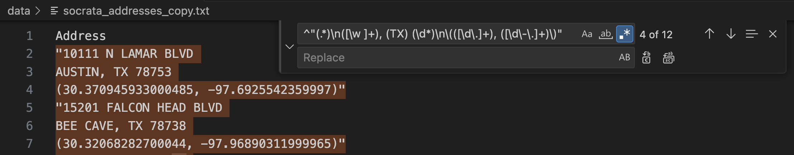
Longitude captured
The Replace string
Now that we have a pattern with our six groups of data, we keep or exclude them in any order we want using the Replace prompt and the replace all icon.
Our goal is to bring back six of our groups, but to put tabs in between each of them. If we can build a search and replace like this, then we can paste the result back into Excel, and each group will become its own column.
A quick refresher from our intro: Once we’ve built a group, we can reference it in our substitution string by order in which we captured it. So, if we want to reference our first group, we use this: $1.
Add this to the Replace prompt:
$1Click the second icon next to the replace string (which is replace all):
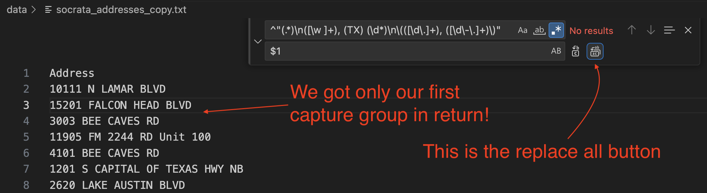
The replace all button Now that you’ve seen that, do Edit > Undo to put our data back!
I wasn’t trying to scare you there, but you needed to see how replacing with a capture group worked.
Update the Replace string to add a tab token
\tbetween each group.$1\t$2\t$3\t$4\t$5\t$6And then use the replace all icon to do the Find/Replace on all rows.
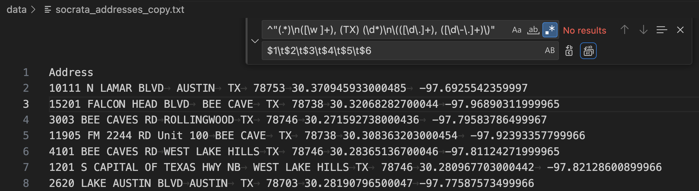
We did it!
Add to Excel or Google Sheets
The way this text is structured, you can copy it all and then paste it into an Excel or Google Sheets spreadsheet and you should get six distinct rows.
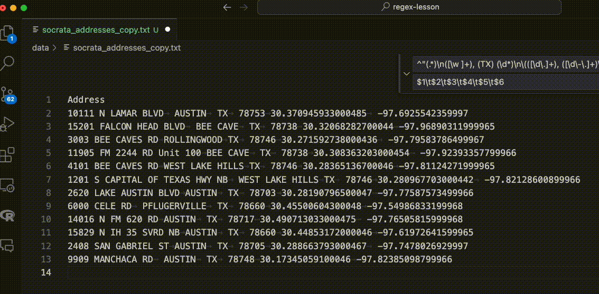
More Regex
There are lots of sites and tutorials on regular expressions, but regular-expressions.info is one of my favorites.
And remember, if you are stumped by something, chances are you are not the first. Google and Stack Overflow are your friends. ChatGPT might be helpful, too, if you are good at prompts.